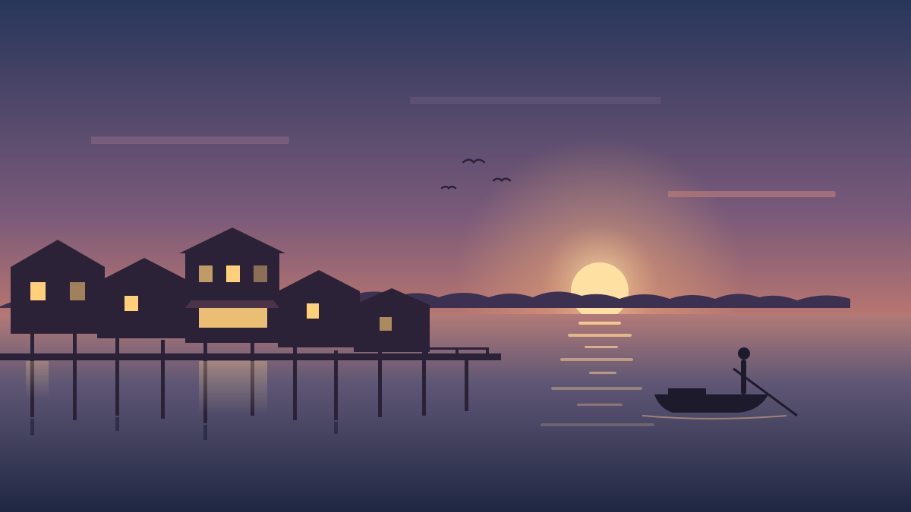

The Klang Weekender Travel
Pulau Ketam after the last ferry
The 5:30 pm boat leaves for Port Klang and the village on stilts goes quiet. We stayed the night.

The Klang Weekender Travel
The 5:30 pm boat leaves for Port Klang and the village on stilts goes quiet. We stayed the night.
